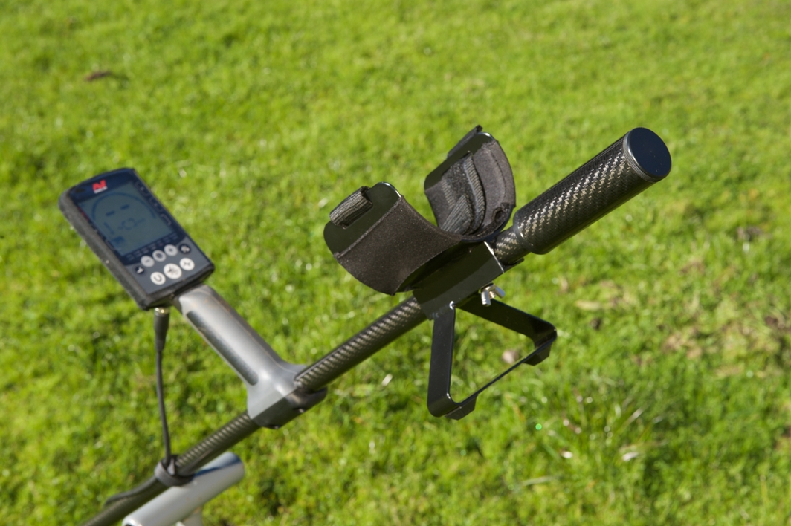
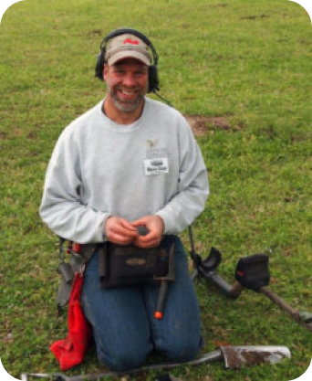

Your home of premium-quality carbon-fiber detector rods/shafts, sand-scoop handles, and other accessories for your detecting needs
About Us
Steve's Detector Rods is a small business located in Norman, Oklahoma, which was founded in early 2018. The business initially emerged from a desire to build a couple of lower rods for my own personal Minelab CTX 3030 detector. As a long-time Minelab Explorer user, I became accustomed to ease of changing coils on the Explorer as afforded by having the coils pre-attached to a separate, spare lower rod. With the price of the extra Explorer lower rods affordable enough to justify the "convenience factor", I acquired a spare rod for... read more
